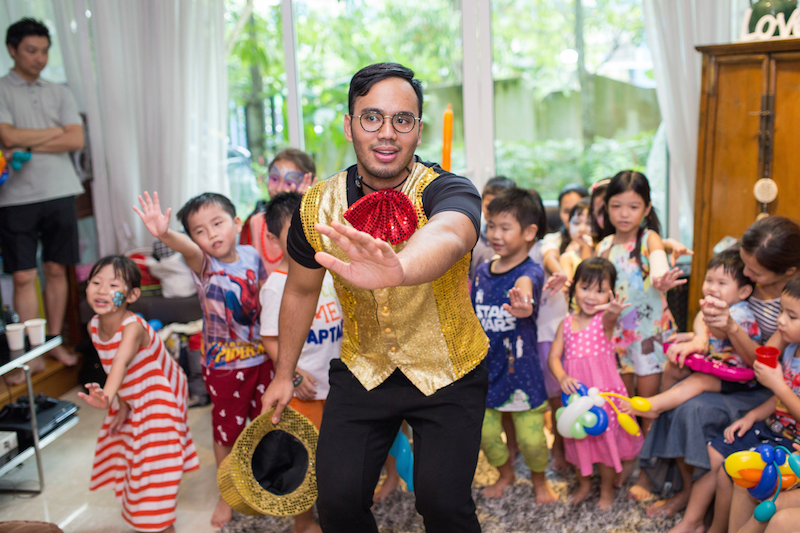
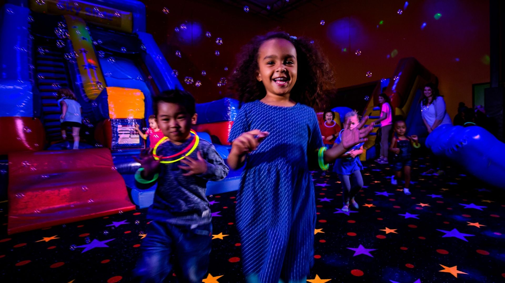
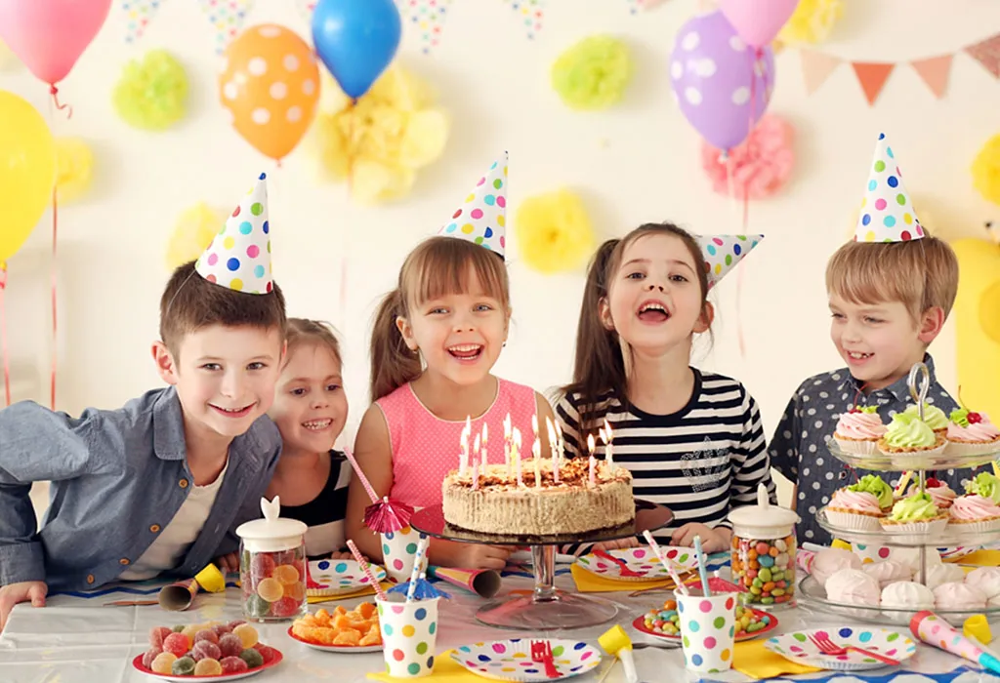
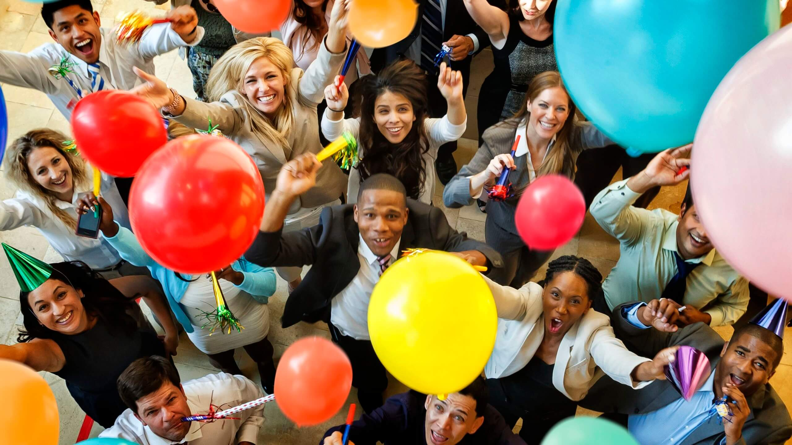

|  |  |  |
|  | ||
Office CelebrationsThe organization marks the beginning and end of each year with parties that set positive goals and reflect on achievements, respectively. These celebrations strengthen team dynamics through recognition and bonding activities, enhancing workplace culture and employee engagement. |
Children's Birthday CelebrationsChildren's birthdays are celebrated within the community, reflecting a commitment to family values. These events, often featuring themed decorations, games, and entertainment, not only provide joy and fun for the kids but also foster community building among families. They are meticulously planned to cater to individual preferences and needs, ensuring inclusivity and personalization. |
Overall ImpactBoth types of celebrations underscore the organization’s dedication to its values and people, enhancing job satisfaction, community spirit, and organizational loyalty. This comprehensive approach to recognizing both professional and personal milestones fosters a supportive and vibrant workplace environment. |